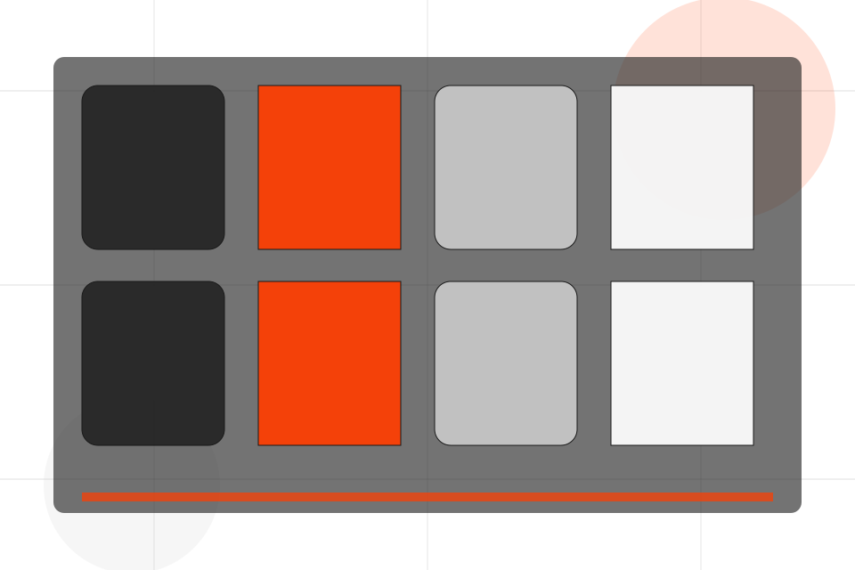
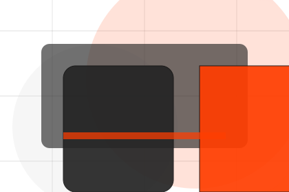
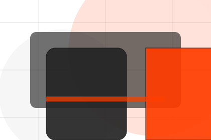
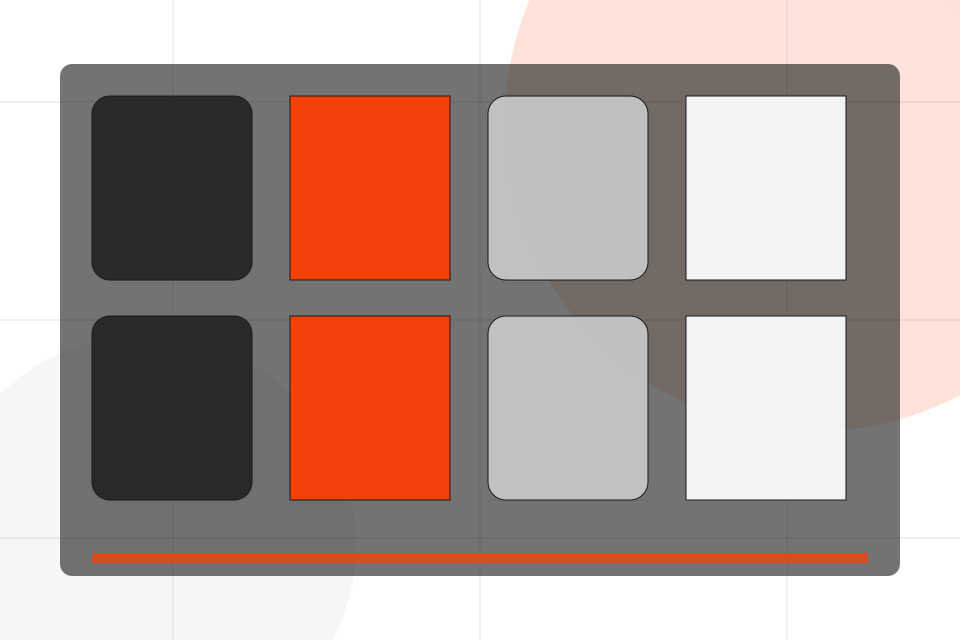
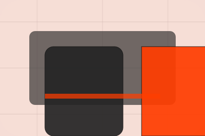

Contact / 01
Contact by Pulse
Contact shaped for sports, fitness & recreation decisions.
Contact opens as a clear sports decision hub: what Pulse offers, who it helps, why it matters, and which route to take first.
The first screen combines positioning, proof, primary action, and fast internal navigation, so people can act immediately or compare the rest of the contact route with context.
Sports scopeCompare optionsRequest advice

Contact / 02
Send the right details
Trial makes the contact path concrete: what to send, how the response works, and what Pulse needs before visitors join a class.
The section reduces contact friction by naming the channel, expected detail, privacy path, and response expectation instead of dropping visitors into a generic form.
Join ClassPulse keeps trial practical: send the key details, choose the right contact route, and know what kind of reply to expect.
Join ClassContact / 04
Send the right details
Phone makes the contact path concrete: what to send, how the response works, and what Pulse needs before visitors join a class.
The section reduces contact friction by naming the channel, expected detail, privacy path, and response expectation instead of dropping visitors into a generic form.
Join ClassDetails
What information helps Pulse respond with a useful answer instead of a generic reply.
Timing
How the visitor should think about response, urgency, location, or availability.

Reply
The expected next message keeps scope, timing, and the first practical step clear.
Contact / 05
Send the right details
Location makes the contact path concrete: what to send, how the response works, and what Pulse needs before visitors join a class.
The section reduces contact friction by naming the channel, expected detail, privacy path, and response expectation instead of dropping visitors into a generic form.
Join ClassWhat information helps Pulse respond with a useful answer instead of a generic reply.
How the visitor should think about response, urgency, location, or availability.
The expected next message keeps scope, timing, and the first practical step clear.
Contact / 06
Send the right details
Hours makes the contact path concrete: what to send, how the response works, and what Pulse needs before visitors join a class.
The section reduces contact friction by naming the channel, expected detail, privacy path, and response expectation instead of dropping visitors into a generic form.
Join Class- 01
Details
What information helps Pulse respond with a useful answer instead of a generic reply.
- 02
Timing
How the visitor should think about response, urgency, location, or availability.
- 03
Reply
The expected next message keeps scope, timing, and the first practical step clear.
Contact / 07
Send the right details
Map makes the contact path concrete: what to send, how the response works, and what Pulse needs before visitors join a class.
The section reduces contact friction by naming the channel, expected detail, privacy path, and response expectation instead of dropping visitors into a generic form.
Join ClassPulse keeps map practical: send the key details, choose the right contact route, and know what kind of reply to expect.
Join ClassContact / 08
Send the right details
Response makes the contact path concrete: what to send, how the response works, and what Pulse needs before visitors join a class.
The section reduces contact friction by naming the channel, expected detail, privacy path, and response expectation instead of dropping visitors into a generic form.
Join Class
Details
What information helps Pulse respond with a useful answer instead of a generic reply.
Contact / 09
Send the right details
Submit makes the contact path concrete: what to send, how the response works, and what Pulse needs before visitors join a class.
The section reduces contact friction by naming the channel, expected detail, privacy path, and response expectation instead of dropping visitors into a generic form.
Join ClassDetails
What information helps Pulse respond with a useful answer instead of a generic reply.
Timing
How the visitor should think about response, urgency, location, or availability.
Reply
The expected next message keeps scope, timing, and the first practical step clear.
Contact / 10
Join Class
Pulse closes the contact route with a clear action, a quick reminder of the value, and a low-friction way to join a class.
Visitors who are ready can use the primary action. Visitors who are still comparing can scan the section links, proof, and support routes before they join a class.
Join ClassThe final block keeps the choice simple: act now, compare one more proof route, or send enough detail for a focused response.
Join Class
progress and belonging
Join Class
A fitness site with athlete-scale hero, program cards, coach proof, schedule filters, and membership CTAs. Contact ends with a direct path to join a class, plus enough context for visitors who still need to compare.

Join ClassImportant notes before you act
Fitness guidance should be adapted to health status and professional advice where needed.